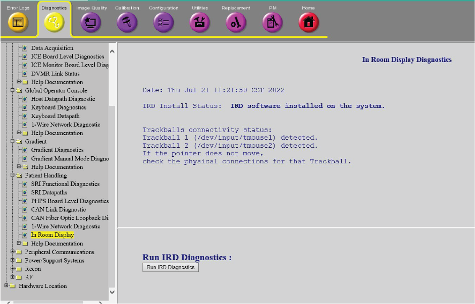

- 00000018WIA30BBBE20GYZ
- id_131072572.4
- Oct 27, 2022 12:59:54 AM
In Room Display Diagnostics
Diagnostic Link
Diagnostics >> System Function >> Patient Handling>> In Room Display
Diagnostics >> Hardware Location >> Magnet Room>> In Room Display

Purpose
This diagnostic determines if the trackballs are detected by the host PC and obtains status information on the connectivity of the trackball devices. It provides a mechanism to restart only the In Room Display (IRD) without restarting the host PC. If the Patient Handling Power Supply (PHPS) loses power, a replacement of the IRD console/trackball/IRD interface box, or re-connection of USB/DVI-D/fiber optic cables may cause the trackballs to lose connectivity.
Components Tests
-
In Room Display
-
Operator Control Panel
-
In Room Display Interface Box
Requirements
In Room Display software must be installed.
Test Sequence
-
Click Run IRD Diagnostics to determine the trackball connectivity status.
-
If the In Room Display Diagnostics indicate that the trackballs are detected, confirm that none of the trackballs could move the pointer on the IRD. Proceed to the next step only if:
-
Trackball 1 and trackball 2 are detected, and
-
Trackballs on the Operator Control Panel are not moving the pointer
-
-
Click Reset IRD Console to restart the IRD.
-
Wait for about two minutes until the IRD comes up.
-
Confirm that the IRD is up and both trackballs move the mouse pointer on the IRD.
Expected Results
The In Room Display is reset and the trackball function works to move the cursor on the In Room Display.